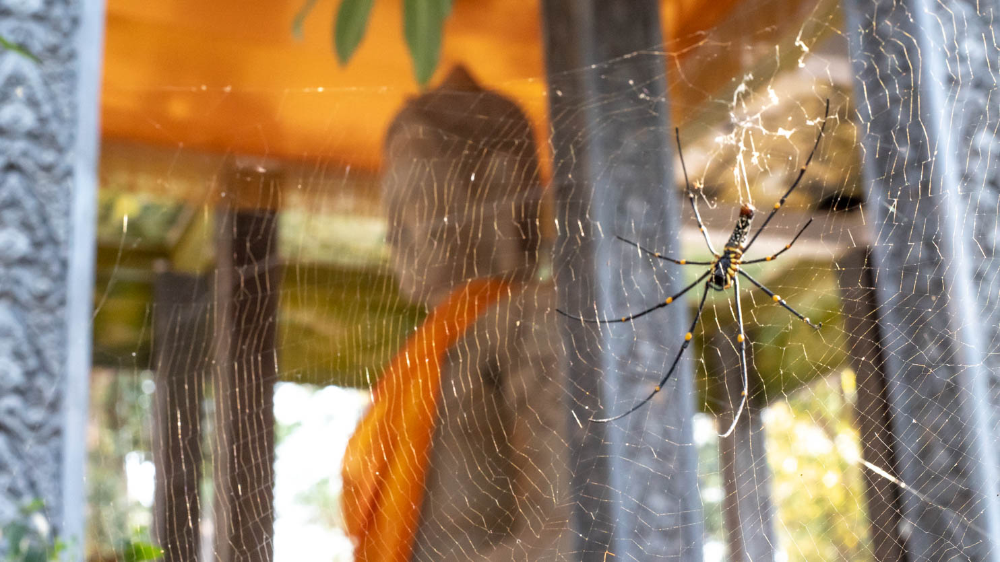

Wandered by an ornate Buddhist temple in the Angkor Park — with a wicked looking spider.

Blog · Cambodia
Buddhist Temple in the Angkor Park
April 15, 2025

April 15, 2025
Wandered by an ornate Buddhist temple in the Angkor Park — with a wicked looking spider.